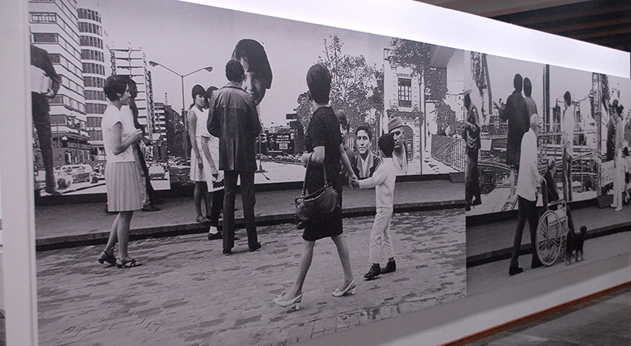
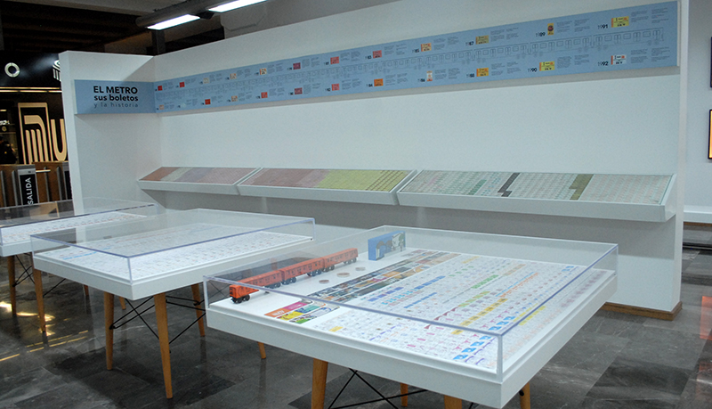

Ubicación y Acceso
El Museo del Metro ofrece un recorrido por la historia y el arte del sistema.
Detalles de Ubicación:
- Ubicación: Estación Mixcoac (Líneas 7 y 12).
- Horario: Lunes a viernes de 10:00 a 18:00 horas.
- Costo: Gratuito (solo se requiere acceso al Metro).




